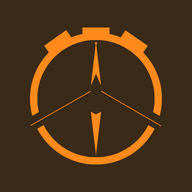

Chron
Oar
+ Uhr
Alle
▲▼
↺ Reset
Starten
Strecke
Löschen
Einheit
Display an
0:00:00
Reset
Start
GPS
GPS starten
–:–
/500 m
0,00
km
– m/s
Schlagzahl
–
SPM
Tippen: Start
+ Sportler
☁ Sheet
PDF für heute
Als Tabelle kopieren
☁ Sheet
Alle löschen
Eine Zeile pro Sportler und Belastung. „Alle löschen“ leert nur die Liste auf diesem Handy, im Google Sheet bleibt alles erhalten.
Anleitung
Coach
ChronOar
Regatta
Sportler
Ergebnisse
Anleitung
Schließen

Chron
Oar
eine App von
Lennart Geerdes